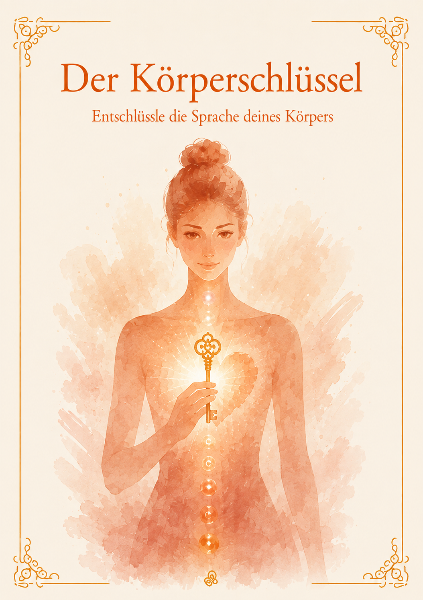

Entschlüssle die Sprache deines Körpers
Finde es in 3 Minuten heraus. Kostenlos.
Meinen Körperschlüssel entdeckenKostenlos · 7 Fragen · Dein Ergebnis siehst du sofort und bekommst es zusätzlich per Mail
Hallo du wundervolle Frau,
ich glaube fest daran, dass dein Körper immer für dich ist. Jeden Tag spricht er mit dir, durch Verspannungen, Erschöpfung, Schmerzen oder Beschwerden, die immer wiederkehren. Oft drückt er dabei deine Emotionen aus, denn alles, was im Innen drückt, sucht nach Ausdruck.
Der Körperschlüssel hilft dir zu verstehen, was dein Körper dir sagen möchte. Innerhalb von 3 Minuten bekommst du dein persönliches Tor. Ein Tor steht für eine Lebensphase mit ihrem Thema und zeigt dir, wo du gerade stehst und warum du immer wieder am selben Punkt landest. Er ersetzt keine medizinische Diagnose.
Ich bin Claudia. Seit 36 Jahren begleite ich Frauen als Körpertherapeutin und Schamanin dabei, ihren Körper zu verstehen und zu erkennen, wie sich Emotionen im Körper ausdrücken.